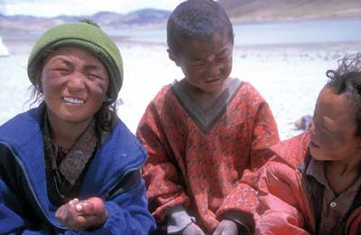

Danke...Meine Radtour wäre nicht dieselbe ohne die Begegnungen mit so vielen Menschen. Ich erhielt Hilfe unzählige Male, gerade als ich es zuallerletzt erwartet habe, ich bekam einen wunderbaren Ort zum übernachten, hatte unglaublichen Spass, tiefe Gespräche und Bekanntschaften, die mein Herz schneller schlagen liessen... Diese Menschen hatten einen bedeutenden Teil an meiner Reise: |

KroatienAnkica und Marijne - für den herzlichen Empfang in ihrer Pension und die langen Gesprächen am nächsten Tag. Ich lernte sehr viel. RumänienGheorghe - Gejagt von einem Hund und Speiche gebrochen... Dann, erfuhr ich die Gastfreundschaft von Gheorge - ein junger Theologiestudent. TürkeiEin Mann am Strassenrand - Am zweiten Tag in der Türkei sah ich plötzlich frisches Fleisch von einer Holzkonstruktion runterhängen... dann den Mann, der dieses Fleisch verkauft. Obwohl ich überhaupt keine Ahnung von Türkisch hatte, bekam ich einen bewegenden Eindruck vom harten Alltag der Türken... und deren Gastfreundschaft! Sophie und Jerome - Ein junges französisches Pärchen, dass 2001 auf eine Weltreise per Vespa gestartet ist. Ich genoss die Zeit sehr mit den beiden auf dem Camping "Berlin" in Göreme, Kappadockien. Ayhan - Ich sah wahrscheinlich ziemlich verloren aus, als ich meine Kleider vor dem Frisiersalon von Ayhan wechselte in Erzincan. Er bat mich herein und schlussendlich bekam ich von ihm soviel Hilfe, wie ich mir nicht hätte erträumen können. Er besorgte mir einen Ort, um mein Rad aufzubewahren während in Ankara bin. Auch half er mir beim Busticket, rasierte meinen langen Bart und verpasste mir einen türkischen Haarschnitt, lud mich zu seiner Familie zum Abendessen ein und begleitete mich am Ende zur Busstation... Ich war total gerührt. Eine wunderbare Person! GeorgienNicht nur Wodka... sondern viele freundliche Gesichter am Strassenrand.AserbaidschanRashad und Bahar - Ich kam gerade in Baku an gerade als das Staatsbegräbnis für den verstorbenen Präsidenten abgehalten wurde. Ich muss wohl ziemlich auffällig gewesen sein mit meinem vollbeladenen Fahrrad. Es dauerte jedenfalls nicht lange, bis mich Rashad ansprach. Wir verbrachten dann viel Zeit miteinander und ich bekam viel interessantes von Baku zu sehen. Auch begleitete uns seine süsse Kollegin Bahar... IranSanaz und ihre Familie & Freunde - Eine Begegnung, die nicht wunderbarer hätte sein können. Du hast mir einen Einblick in den Iran gegeben, den ich mir erträumt hätte. Danke für alles! Ich hoffe wir sehen uns wieder. Mehdi und seine Familie - Eine sehr talentierte Person, die alles beherrscht von Beethovens Sonaten bis zur einfallsreichen Architektur. Mostafa und seine Familie & Freunde - Eine wunderbare Gastfreundschaft. Ich wünschte ich hätte mehr Zeit gehabt! TurkmenistanViele lächelnde Gesicht und immer etwas Brot und Wodka in der trostlosen Karakumwüste. UsbekistanViele Familien haben mich zu sich nach Hause eingeladen. Ein wunderbarer Einblick ins usbekische Leben! Von einem jungen Pärchen zu einer tadschikischen Grossfamilie |
TadschikistanNathalie und Albert - Per Zufall in Usbekistan angetroffen. Die beiden arbeiten für die EU in Dushanbe. Sie haben mich spontan eingeladen mit ihnen etwas Zeit zu verbringen und ich bekam einen sehr interessanten Einblick in die NGO Arbeit. Dazu bekam ich durch Nathalie und Albert viele Infos und Hilfe bei der Planung der Radfahrt durch den Pamir. Fernand - Einer der Kontakte von Nathalie und Albert. Fernand ist ein beeindruckender Manager für die Europäische Bank in Dushanbe. Sehr hilfreich! Sein Vize hat mein Visumsverlängerungsantrag und Permit in Rekordzeit durchs Aussenministerium durchgeboxt! Sarah and Arnaud - Angetroffen in der Mitte vom tadschikischen Pamir. Es wurde eine wunderbare Begegnung. Wir plauderten lange übers Reisen, das Leben und alles andere. Die beiden waren auf fantastischen Ausflügen in Afghanistan! KirgisienBea - Sie war eine Pfadileiterin in der Schweiz in der gleichen Region, wo auch ich aktiv war. Per Zufall kamen wir während der Tour in Kontakt und sie lud mich spontan zu sich in Bishkek ein. Wir hatten riesen Spass! Sie führte mich zu all den tollen Restaurants. Schlussendlich bekam ich sogar meine Zukunft vorhergesagt... mit Tarotkarten ;) ChinaAntoine - Unglaubliches Glück ihn zu treffen. Danke für die fantastische Zeit, die wir hatten während des echt harten Teils der Tour im Himalaya. Auf ein Bier in der Schweiz! Vawn, Melanie, Tashi und Sonam - Diese vier waren gerade auf der Kora rund um den Mt. Kailash. Vawn und Melanie mit ihrem Fahrer Tashi und Sonam, der starken Trägerin. Wunderbare Gesellschaft während der Kora! NepalRachel, Tewa, Michael, Casper und Henry - Mit diesen Leuten war ich in Kathmandu und Umgebung zusammen: Rafting, Bier, Pizza, etc. Danke! War eine tolle Zeit. Zuhause in der SchweizRene - Mein Vater hat sich, um all meine irdischen Verpflichtungen gekümmert... Rechnungen für mich bezahlen, Pakete schicken, etc. Obwohl er wohl einige Male ziemlich beunruhigt war wegen meinem Wohlergehen, so steckte ihn das Radfahren doch ziemlich an. Simon and David - Meine zwei Brüder schafften es ein Paket an einen Ort zu senden, wovon die beiden noch nie etwas gehört haben. Auf der ganzen WeltMarkus - Ein deutscher Tourenfahrer, der etwa zur selben Zeit gestartet ist wie ich. Wir tauschten viele und lange Emails aus und konnten so etwas die Frustration vom Herzen schreiben, wenn wieder einmal ein Visumsantrag nicht geklappt hat. Gleichzeitig weckten wir gegenseitig die Neugierde auf alles das Kommende. Janne - Tourenfahren am Limit. Ich wurde enorm inspiriert von Janne und genoss die vielen Emails, die ich mit ihm ausgetauscht habe während den vergangenen Jahren. Es war Janne, der das Verlangen in mir weckte, immer etwas weiterzugehen, als man es sich zuerst zutraut. Claude - Cyclonaut von grosser Inspiration. Tourenfahren wäre nicht dasselbe ohne diesen Schweizer aus Genf. (schaut' auf meine Linkseite für Infos zu den beiden letzten Radlern) |